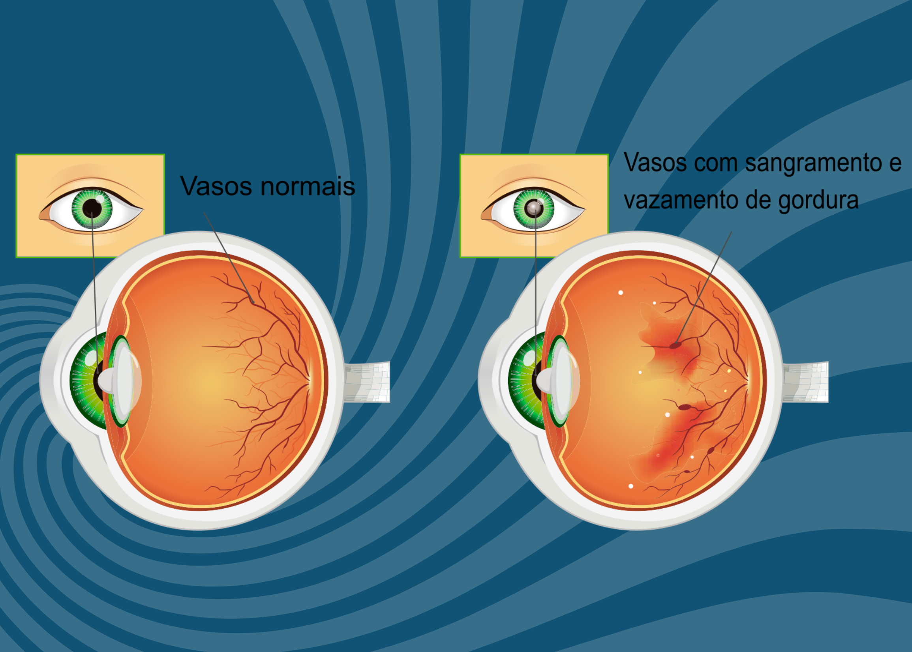

Retinopatia Diabética
O que é retinopatia diabética?
Imagine a retina como uma "câmera" delicada no fundo do seu olho. Quando o diabetes não é controlado direito, o excesso de açúcar no sangue vai danificando os vasinhos sanguíneos que nutrem essa região. Aos poucos, eles podem vazar líquido, sangrar ou até criar tecidos cicatriciais que distorcem a visão. É assustador, mas tem tratamento!
Como perceber os sintomas?
Nem sempre a retinopatia avisa que está chegando, nos estágios iniciais, pode ser silenciosa. Mas fique atento se:
- Sua visão ficar embaçada, como se olhasse por um vidro sujo
- Aparecerem manchas escuras que parecem "mosquinhas" te perseguindo
- Você começar a tropeçar em objetos que antes via facilmente
- As cores perderem o brilho, como se fosse um filtro cinza
Importante: Se de repente você perder parte da visão, corra para o oftalmologista! Pode ser um sinal de emergência.
Por que isso acontece?
O diabetes é como um hóspede inconveniente: se não for bem cuidado, ele bagunça tudo. O açúcar alto no sangue vai:
- Enfraquecer as paredes dos vasos – como um cano furado que vaza
- Criar vasos "piratas" (frágeis e malfeitos) que pioram a situação
- Inchar a mácula (a parte central da visão), borrando detalhes
Quem tem diabetes há muitos anos, pressão alta ou colesterol descontrolado está no grupo de maior risco.
Como descobrir se tenho?
Se você tem diabetes, não espere sentir algo errado para ir ao oftalmologista! O exame é simples:
- Colírios para dilatar a pupila (a visão fica embaçada por algumas horas)
- Um scanner especial (OCT) que "fotografa" sua retina em 3D
- Às vezes, um corante é injetado para mapear vazamentos (é rápido e indolor)
Dica: Lece um óculos escuro no dia do exame, a luz vai incomodar depois da dilatação.
Dá para prevenir?
Com certeza! Essas atitudes fazem toda a diferença:
- Monitore seu açúcar no sangue como se fosse um compromisso de trabalho
- Vá ao oftalmologista todo ano – mesmo que esteja enxergando bem
- Controle a pressão – pense nela como um "freio" para o avanço da doença
- Coma vegetais coloridos (espinafre, cenoura) – eles são "óculos de sol naturais" para sua retina
Tratamentos disponíveis
Se precisar tratar, não entre em pânico! Temos opções modernas:
- Injeções no olho: Parece assustador, mas é menos doloroso que tirar sangue! São medicamentos que secam vazamentos.
- Laser terapêutico: Como um "soldador" que sela vasos problemáticos, você só sente flashes de luz.
- Cirurgia (vitrectomia): Só para casos graves, remove sangramentos e tecidos cicatriciais.
Boa notícia: A maioria dos tratamentos é feita sem internação, e você volta para casa no mesmo dia!
Perguntas que os pacientes fazem
- "Vou ficar cego?" – Não, se seguir o tratamento e controlar o diabetes. A maioria mantém uma visão útil.
- "As injeções doem?" – Menos que você imagina! Usamos anestésicos para seu conforto.
- "Meus filhos herdarão isso?" – A retinopatia não, mas a predisposição ao diabetes sim. Ensine hábitos saudáveis desde cedo!